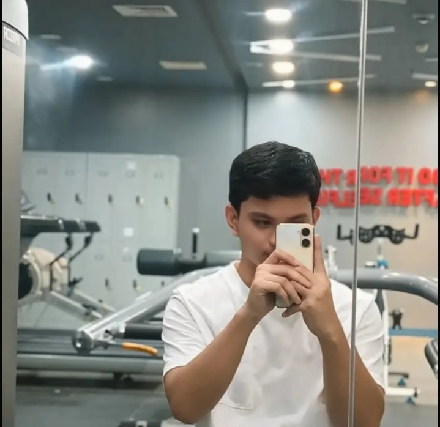

Kim was a reliable friend and a former classmate of mine. I would describe her as intelligent, kind, and professional in her approach to work. She is consistently stands by her ideas while also open to feedback, showing strong communication and leadership skills. Lastly, Kim is also organized, adaptable, and dependable, making her an effective team player who contributes positively to any work environment.

Jherome Gariando
Former Classmate
Kim has been a quiet but incredibly reliable support in managing my workload. Without needing to be asked, she consistently takes the initiative to help, easing the pressure during busy times. Her willingness to step in silently and efficiently speaks volumes about her dedication and teamwork.
Kim’s work ethic and thoughtful approach make a meaningful difference, and I’m genuinely grateful for her contribution
Kim is a dedicated student who takes her studies seriously and always tries her best. She is responsible, hardworking, and willing to learn from every experience. A reliable and hardworking person at work. She handles her responsibilities well, communicates respectfully with others, and stays committed to doing her job properly
I've known Kim for a year now, and I met her during our training at a BPO company. Since then up to now she is very reliable, and trustworthy when it comes to providing assistance to somebody else. I must say that she's also kind and jolly, but very disciplined when it comes to the things she puts her heart into such her job and study. Kim is very smart, she knows what she is doing, and shows excellence in her job. She is an inspiration that everyone should look up to.
Marvin Arandela
Office Mate
Kim is a dedicated and adaptable individual known for her strong communication skills, professionalism, and positive work ethic. She is recognized for being reliable, approachable, and committed to continuous growth and improvement. Her ability to remain calm under pressure, solve problems effectively, and maintain professional relationships makes her a valuable asset in any workplace..
Neahlyn De Vera
Former Supervisor
Kim’s discipline and hard work set her apart. She has a unique ability to balance complex projects while maintaining a high standard of excellence. Any team would be lucky to have her drive and talent.
Marion Bondoc
Office Mate